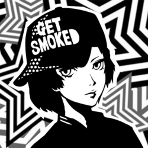

Tower XVI

Shinya Oda
Confidant Abilities
| Rank | Ability |
|---|---|
| 1 | Down Shot: Allows you to knock down an enemy with a special shot once per infiltration. |
| 2 | Bullet Hail: Chance to enter a gun-based All-Out Attack after a successful ambush. |
| 3 | Warning Shot: Able to scare enemies in negotiation to make it easier to obtain a Persona. |
| 4 | - |
| 5 | Laced Bullets: Increases the success rate of an ailment-inflicting gunshot. |
| 6 | Cheap Shot: Allows you to use Down Shot three times per infiltration. |
| 7 | - |
| 8 | Electric Slug: Increases the damage inflicted by Bullet Hail. |
| 9 | - |
| 10 | Oda Special: Allows Joker's gun attacks to ignore resistances and hit the enemy. |
Schedule
- Time of DayDaytime
Day of Week: Monday, Tuesday, Thursday, and Saturday
Location: Akihabara Arcade
Rank Up Progression
| Rank | Requirements / Dialogue Choices | Next Pts |
|---|---|---|
| 1 | Requires progressing the "Winners Don't Use Cheats" request to meet Shinya. 1. "Call me when it’s game time.” (+10) Reward:Kindness +3♪ | 0 |
| 2 | 1. "Don't compare me to you." (+10) 2. "What a rude employee." (+5) 3. "Do you admire them?" (+5) 4. "I'll let them know." (+15) 5. (Phone) "I'll work hard." / "So then I can beat you?" (+5) Reward:Kindness +3♪ | 0 |
| 3 | 4. "That's the spirit." (+5) 5. (Phone) "Sure." (+5) Reward:Kindness +2♪ | 11 |
| 4 | 1. "Yeah, you tell him!" (+5) 2. "Get your revenge." (+5) Reward:Kindness +2♪ | 14 |
| 5 | 1. "It was pretty weird." (+15) 2. "I'm sure you can do it." (+5) 3. "You need a new strategy." (+10) 4. (Phone) "I'll be cheering you on." / "Think you can take him?" (+5) Reward:Kindness +2♪ | 20 |
| 6 | 3. "I believe in you." (+10) 4. "Not at all." (+10) 5. (Phone) "Of course I won't." (+5) Reward:Kindness +2♪ | 25 |
| 7 | - | 0 |
| 8 | 1. "No, she's not." / "Is that what you think?" (+5) 2. "Believe in them." (+10) 4. Any (+15) Reward:Kindness +3♪ | 0 |
| 9 | Requires completing "A Mother's Aggression" request. 1. "I'm glad to hear that." (+10) 2. "It means you've matured." (+15) 3. "He wants to win at all costs." (+5) 4. (Phone) Any (+5) Reward:Kindness +3♪ | 30 |
| 10 | Reward:Kindness +1♪ | N/A |
Gift Guide
| Gift Item | Confidant Points | Purchase Location | Price |
|---|---|---|---|
| Silver Bangle | +50 | Turtle Diamond Jewelry Store, Station Underground Mall, Shibuya | ¥78,000 |
| Snack Pack | +50 | Rocinante, Central Street, Shibuya | ¥5,800 |
| Uji Matcha Flan | +50 | Taisho Store Premium Supermarket, Station Underground Mall, Shibuya | ¥2,400 |
| Truffles | +50 | Supermarket, Station Underground Mall, Shibuya | ¥2,800 |
| 48-Sided Puzzle | +50 | General Store, Shinjuku | ¥3,200 |
| Motorbike Figure | +50 | Otaku Goods Shop, Akihabara | ¥4,800 |
| Katana Keychain | +50 | Otaku Goods Shop, Akihabara | ¥500 |
Bonus Events
Hangout Asakusa (Requires Tower Rank 4 ~ 9)
- "Let's walk around and eat." (+15)
Hangout Maihama (Requires Rank 9, Weekend/Holidays Only)
- "Coming alone isn't bad." (+15)
- Receive Balloons